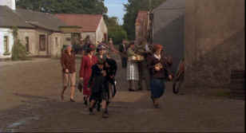

|
Dancing at Lughnasa/B-,B+ |
|
Columbia/1998/95m/ANA 1.85 |
A warmly woven tale of five sisters living in a small Irish village in 1936, Dancing at Lughnasa succeeds mainly for the fine ensemble acting. The cast is uniformly at ease with the Irish setting and makes the days of one eventful summer bask in the warm glow of memory.
 |
|
Meeting Father Jack. ©Columbia |
Not much happens in this small Irish village as the world is
changing around it. But the events of this one summer will
change the lives of one family forever. Father Jack, the
eldest, returns from many years of African service with eerily
altered sensibilities. Gerry, middle sister Catherine’s
estranged husband, sweeps back into their lives out of the dust
haze of his motorcycle. Kate finds her job is threatened. The
youngest, simpleminded Rose, finds her primal urges begin to
take hold of her. Change is in the air and forces begin to play
on the simple household that cannot be stemmed.
Pat O’Connor directs with the ease of
a comfortable storyteller. Each character is given fine moments
without stopping the flow of the film. The sisters depend on one
another and so do the actresses in this film. Playing off each
other, they create a screen family with which audiences can
sympathize. Yet, the film fails to ignite any real passion or
emotion. O’Connor strives for a spiritual sense that never
materializes. There’s only fuzzy sentimental warmth. The women
survive in less than grand circumstances, finding joy and pain
in each other, in the daily boredom of life.
The lovely country settings are lush
and green and bathed in a warm light of remembrance. The
cinematography is as straightforward as the storytelling. Clean
composition, fine lighting and a wistful lens make Dancing at
Lughnasa visually beautiful.
Meryl Streep plays eldest sister Kate
with dour sincerity. Catherine McCormack, the outspoken
courtesan of Dangerous Beauty, is pretty and sincere, but
the most interesting performances are from a fresh trio of faces
playing the three plainest sisters. Kathy Burke, Sophie Thompson
and Brid Brennan embody the frustrations, desires, and
simplicity of these small town Irish folk. Michael Gambon lends
wanders in and out of reality effectively as Father Jack and
Rhys Ifans is energetic and likeable as Gerry.
Dancing at Lughnasa has
been turned into a splendid DVD. The anamorphic widescreen
images are sharp and as clean as can be. There’s no artificial
enhancement to add noise to the skies or trees or fields of
grass. The interior lighting of the Mundy cabin caresses the
actresses in the most flattering light. This is a bright and
colorful transfer. The Dolby Digital 2-channel surround sound
has little surround information, but the music is lively and
fills the theater comfortably.
|
Check out
the Movie
Poster Archive for short bios and
images of Susan Hayward, Kirk Douglas, Katharine
Hepburn and many more. This month's featured star
is Humphrey
Bogart |
|
HOT
LINKS Imaging
Science Foundation
|
|
Home Theater Reference Reviewing System When you read a DVD review it's of utmost importance to know what equipment is being used to evaluate quality. Click on the projectors to find out more. |